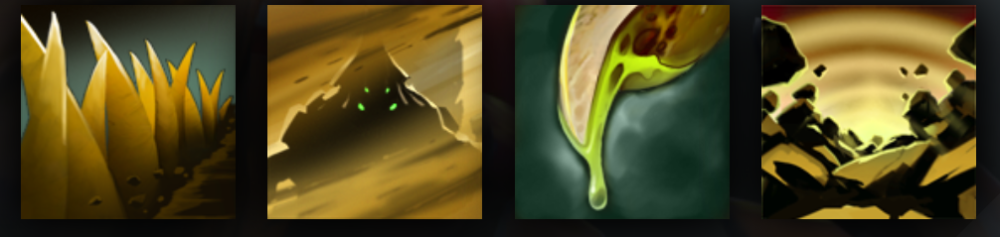

SAND KING
BURROWS TO STUN AND SLOW ENEMIES
HISTORY
The sands of the Scintillant Waste are alive and sentient--the whole vast desert speaks to itself, thinking thoughts only such a vastness can conceive. But when it needs must find a form to communicate with those of more limited scope, it frees a fragment of itself, and fills a carapace of magic armor formed by the cunning Djinn of Qaldin. This essential identity calls itself Crixalis, meaning 'Soul of the Sand,' but others know it as Sand King. Sand King takes the form of a huge arachnid, inspired by the Scintillant Waste's small but ubiquitous denizens; and this is a true outward expression of his ferocious nature. Guardian, warrior, ambassador--Sand King is all of these things, inseparable from the endless desert that gave him life.
ABILITIES
PAIRD WELL WITH
ENIGMA
PUDGE
LICH